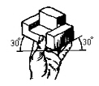
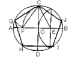
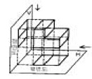
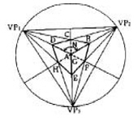
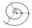
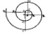
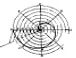
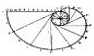

컴퓨터그래픽스운용기능사 (2005-04-03 기출문제)
1과목: 산업디자인 일반
1. 미국의 광고대행업자협회의 초대회장 E. 레우스가 제창한 AIDMA 법칙의 구성요소가 아니 것은?
- 주의
- 흥미
- 욕망
- 가격
(정답률: 83%)

2. 대량생산을 위한 산업혁명의 가장 큰 원동력이 된 것은?
- 동력기계의 발명
- 망원경의 발명
- 폭약의 발명
- 인쇄술의 발명
(정답률: 80%)
3. 디자인 프로세스 접근방식에서 과학적이고 체계적인 사고를 바탕으로 하는 글라스 박스(glass box) 방법에 대한 설명으로 바른 것은?
- 디자이너의 직관을 중심으로 행해지는 방법이다.
- 투입되는 요소와 산출물이 나오는 과정이 비교적 명확하게 식별된다.
- 평가에 비중을 두는 새로운 방법이다.
- 디자인 문제를 해결하기 위해 어떤 방법을 이용하여 어떻게 풀 것인가를 결정하는 것이다.
(정답률: 61%)
4. 디자인의 요소로서 빛에 대한 설명 중 잘못된 것은?
- 빛은 거칠거나 부드러움, 무르거나 단단함 등의 촉각적인 성질을 가지고 있다.
- 빛은 입체의 표면을 드러나게 한다.
- 빛의 밝음과 어두움도 조형대비나 색채대비 못지않게 중요한 요소이다.
- 움직이는 네온사인, 영화, 텔레비전, 멀티스크린 등은 빛이 만들어 내는 것이다.
(정답률: 88%)
5. 다음 중 식욕을 촉진하기 위한 음식점의 실내 색채계획으로 가장 적당한 배색 조건은?
- 갈색계열
- 녹색계열
- 보라색계열
- 청색계열
(정답률: 74%)
6. 대칭에 대한 설명으로 틀린 것은?
- 좌우 대칭은 좌우 또는 상하로 1개의 직선을 축으로 대칭하는 것이다.
- 대칭은 균형의 가장 정형적인 구성 형식이다.
- '88 서울올림픽' 상징으로 쓰인 '삼태극 마크(엠블렘)'는 좌우 대칭을 응용한 것이다.
- 비대칭은 형태상으로 불균형이지만, 시각상의 힘의 정돈에 의하여 균형이 잡힌다.
(정답률: 70%)
7. 다음 중 효율적인 기업 경영 활동의 일환인 디자인 관리의 필요성이 아닌 것은?
- 소비 지향적 요구
- 산업 경제적 요구
- 디자인 학문적 요구
- 사회 문화적 요구
(정답률: 45%)
8. 광고디자인에서 레이아웃의 중요성과 거리가 먼 내용은?
- 색채의 화려함을 강조하여야 한다.
- 광고의 목적을 달성하도록 유도한다.
- 전체적인 배치의 안정감을 줄 수 있다.
- 다른 광고와의 차별화 및 주목성을 높일 수 있다.
(정답률: 84%)
9. 다음 중 모형 제작을 위해 연구해야 할 분야가 아닌 것은?
- 소비자들의 취향을 파악하는 환경요소
- 물체의 내부 구조와 인간 공학적 측면을 실험하는 형태요소
- 제작 방식과 구조 관계를 실험하는 기계요소
- 생산 기술에 알맞은 지를 검토하는 재료요소
(정답률: 57%)
10. 근대 디자인 운동 중에서 디자인을 생산주의적 관점에서 이해하고 단순 명쾌한 양식을 주장, 가장 저렴한 비용으로 최대의 효과를 얻을 수 있는 방향을 모색한 것은?
- 바우하우스
- 구성주의와 절대주의
- 신조형주의
- 독일 공작 연맹
(정답률: 44%)
11. 타입페이스(typeface) 중 단순하며 획의 굵기가 일정하여 깨끗해 보이는 것은?
- 세리프
- 산 세리프
- 바스커빌
- 해서체
(정답률: 70%)
12. 디자인의 궁극적인 목적을 가장 바르게 기술한 것은?
- 용도나 기능을 목표로 하는 생산행위에 목적이 있다.
- 인간의 행복을 위한 물질적 생활환경의 개선 및 창조를 목적으로 한다.
- 대중의 미의식보다는 개인의 취향을 전제로 디자인하는 데 목적이 있다.
- 경제 발달을 목적으로 한다.
(정답률: 89%)
13. 예술은 대중을 위해서 뿐만 아니라, 대중에 의해서, 대중의 예술이 되어야 한다고 주장하고 예술의 사회화와 민주화를 위해 미술공예운동을 실천한 사람은?
- 존 러스킨
- 윌리엄 모리스
- 오웬 존스
- 헨리 드레이퍼스
(정답률: 89%)
14. 다음 중 연극 포스터는 어느 분류에 속하는가?
- 장식 포스터
- 문화행사 포스터
- 상업광고 포스터
- 공공캠페인 포스터
(정답률: 91%)
15. 제품 디자인에서 제품의 완성 예상도는?
- 렌더링(rendering)
- 스크래치 스케치(scratch sketch)
- 아이디어 스케치(idea sketch)
- 일러스트레이션(illustration)
(정답률: 90%)
16. 다음 중 기하직선형 평면에 대한 설명은?
- 질서가 있는 간결함, 확실, 명료, 강함, 신뢰, 안정 등을 나타낸다.
- 강력, 예민, 직접적, 남성적, 명쾌, 대담, 활발함 등을 나타낸다.
- 수리적 질서가 있으며 명료, 자유, 확실, 고상함, 짜임새, 이해하기 쉬운 점 등을 나타낸다.
- 우아하고 부드럽고 매력적이며 불명확, 무질서, 방심, 단정치 못함, 귀찮음 등을 나타낸다.
(정답률: 56%)
17. 소점과 거리점의 작용으로 투시선과 직선 원근법을 발견하여 회화의 창작 형식을 고안한 사람은?
- 브르넬레스코
- 몽주
- 뒤러
- 알베르티
(정답률: 51%)
18. 인테리어 가구 선택에서 기본조건의 충족요소와 거리가 먼 것은?
- 공간
- 기능
- 재료
- 형태
(정답률: 44%)
19. 디자인의 실체화 과정에서 가장 먼저 전제되어야 할 것은?
- 용도
- 재료와 가공기술
- 기능
- 형태
(정답률: 62%)
20. 건물을 수평으로 잘라 위에서 내려다보고 그린 실내 투시도는?
- 입면투시도
- 조감투시도
- 사투시도
- 평행투시도
(정답률: 51%)
2과목: 색채 및 도법
21. 다음 그림과 같이 물체를 왼쪽으로 돌린 다음 앞으로 기울여 두 개의 옆면 모서리가 수평선과 30°되게 잡으면 물체의 세 모서리가 120°의 각을 이룬다. 이런 투상도를 무엇이라고 하는가?

- 부등각 투상도
- 등각 투상도
- 보조 투상도
- 회전 투상도
(정답률: 79%)
22. "M = O/C" 는 미도를 나타내는 공식이다. M은 미도, C는 복잡성의 요소일 때 O는 무엇을 나타내는 기호인가?
- 구성의 요소
- 환경의 요소
- 질서성의 요소
- 배색의 요소
(정답률: 65%)
23. 그림과 같이 원에 내접하는 정오각형을 그리기 위한 설명 중 틀린 것은?

- 원의 중심점인 O에서 수평수직인 두 지름 AB 및 CD를 긋는다.
- OB 2등분점 E를 중심으로 EC의 길이를 반지름으로 하는 원호를 그려 AB와의 교점 F를 구한다.
- 점 C를 중심으로 CF의 길이를 반지름으로 하는 원호 그려 원주와 만나는 점 G를 구한다.
- 점 G를 중심으로 GO의 길이를 5각형의 한 변의 길이로 삼아 원주를 등분한다.
(정답률: 60%)
24. 현재 우리나라에서 사용하고 있는 교육용 색상환은?
- 오스트발트(Ostwald)의 색상환
- 먼셀(Munsell)의 색상환
- 뉴우톤(Newton)의 색상환
- 헤링(Hering)의 색상환
(정답률: 85%)
25. 다음의 투상도는 어떤 도법에 의해 작성된 것인가?

- 6면 투상면
- 제 1각법
- 직선의 투상법
- 제 3각법
(정답률: 49%)
26. 다음 색상 중 후퇴, 수축색은?
- 노랑
- 파랑
- 주황
- 빨강
(정답률: 86%)
27. 먼셀의 표색계에서 색의 표시 방법인 HV/C에 대한 설명으로 맞는 것은?
- 색상의 머리글자는 V 이다
- 명도의 머리글자는 H 이다.
- 채도의 머리글자는 C 이다.
- 표기 순서가 HV/C일 때 HV는 색상이다.
(정답률: 78%)
28. 색채의 일반적인 감정 효과에 대한 설명으로 틀린 것은?
- 장파장 계통의 색은 따뜻한 색이다.
- 연두, 자주, 녹색 등은 중성색이다.
- 명도가 낮은 색은 무겁게 느껴진다.
- 채도는 높고 명도가 낮은 색은 부드러운 느낌을 준다.
(정답률: 69%)
29. 다음의 투시도법에서 'N' 용어의 설명으로 맞는 것은?

- 물체를 보는 사람 눈의 각
- 시점의 화면상의 위치
- 물체의 측면 깊이를 구하기 위한 각
- 관찰자의 가장 가까운 모서리 각
(정답률: 49%)
30. 다음 중 슈브뢸의 색채 조화론과 거리가 먼 것은?
- 오메가 공간
- 등 간격 3색의 조화
- 인접색의 조화
- 근접 보색의 조화
(정답률: 74%)
31. 다음 중 파장이 가장 긴 색과 짧은 색이 맞게 짝지어진 것은?
- 빨강과 주황
- 빨강과 남색
- 빨강과 보라
- 노랑과 초록
(정답률: 77%)
32. 다음 그림 중 아르키메데스 나사선 그리기는 무엇인가?




(정답률: 71%)
33. 높은 빌딩이나 탁자를 임의의 거리를 두고 내려다 본 것 같이 표현하는 투시도법은?
- 1소점 투시법
- 2소점 투시법
- 3소점 투시법
- 4소점 투시법
(정답률: 75%)
34. 다음 중 굵은 실선으로 표시하는 선은?
- 외형선
- 치수선
- 지시선
- 치수보조선
(정답률: 79%)
35. 두 가지 색 이상을 한꺼번에 볼 때 서로 영향을 받아서 단색을 볼 때와는 달리 색채가 달라져 보이는 현상은?
- 항상성
- 팽창성
- 동시대비
- 계시대비
(정답률: 78%)
36. 보색이 아닌 색을 서로 배색시켰을 때 반대색 방향으로 변해보이는 대비효과는?
- 명도대비
- 색상대비
- 보색대비
- 계시대비
(정답률: 56%)
37. 빛을 감지하는 감광 세포인 간(한)상체가 지각할 수 있는 색은?
- 빨강
- 노랑
- 보라
- 회색
(정답률: 70%)
38. 다음 색의 혼합 중 색료의 혼합에 해당하는 것은?
- 빨강(R) + 녹색(G) = 노랑(Y)
- 파랑(B) + 빨강(R) = 자주(M)
- 자주(M) + 노랑(Y) = 빨강(R)
- 빨강(R) + 녹색(G) + 파랑(B) = 흰색(W)
(정답률: 52%)
39. 선의 종류에 관한 설명 중 틀린 것은?
- 실선은 물체의 외형을 표시하는 선이다.
- 가는 실선은 치수선, 지시선, 해칭선 등에 사용한다.
- 파선은 보이는 부분의 모양을 표시하는 선이다.
- 가는 일점쇄선은 중심선, 절단선, 상상선, 피치선 등에 사용된다.
(정답률: 78%)
40. 져드의 조화론 중 '질서의 원리' 를 설명한 것은?
- 사람들에게 쉽게 어울릴 수 있는 색이 조화감을 준다.
- 규칙적으로 선택된 색들끼리 잘 조화된다.
- 색의 속성이 비슷할 때 조화감을 준다.
- 색의 속성 차이가 분명할 때 조화감을 준다.
(정답률: 63%)
3과목: 디자인 재료
41. 종이의 표면 가공 방식 중에서 엠보싱(embossing), 핫 스탬핑(hot stamping), 알포일(alfoil)에 그라비어 인쇄 등을 사용하는 방식은?
- 프레스 코트
- 미술 가공
- 왁스 칠
- 원압 프레스
(정답률: 40%)
42. 아트필름 또는 스크린 톤의 착색재료를 사용하여 지정된 부분에 압착시켜 표현하는 렌더링 기법은?
- 에어브러시 렌더링
- 마커 렌더링
- 아크릴 렌더링
- 필름 오버레이 렌더링
(정답률: 71%)
43. 다음 중 종이에 안료와 접착제를 발라서 만들며 강한 광택을 입힌 종이로 사진판이나, 원색판이나 고급인쇄에 쓰이는 것은?
- 글래싱지
- 모조지
- 아트지
- 와트만지
(정답률: 55%)
44. 어떤 수치를 다른 장소로 옮기는데 있어서 가장 적절한 재료는?
- T자
- 삼각자
- 컴퍼스
- 디바이더
(정답률: 83%)
45. 스프레이 작업의 순서 중 시험 테스트를 하여 스프레이 건에서 나오는 도료와 공기의 양을 조정한 다음의 순서로 맞는 것은?
- 공기 트랜스포머로 공기 압력을 조절한다.
- 스프레이 건이 물체에 바르게 향하도록 하여 스프레이 한다.
- 스프레이한 후의 면은 잘 확인하여 나쁜 곳은 수정도장 한다.
- 컵과 건의 내부를 청결히 관리한다.
(정답률: 68%)
46. 열 및 산에 약하지만 광선에 대한 굴절률이 커서 장신구나 광학용품에 이용되는 유리의 종류는?
- 소다석회유리
- 칼륨석회유리
- 알칼리납유리
- 붕사유리
(정답률: 56%)
47. 천연의 유기체 고분자 화합물에 속하지 않는 것은?
- 단백질
- 알루미늄
- 녹말
- 글리코겐
(정답률: 75%)
48. 열경화성 수지에 대한 설명으로 틀린 것은?
- 열에 안정적이다.
- 거의 전부가 반투명 또는 불투명이다.
- 압축, 적층성형 등의 가공법에 의하기 때문에 비능률 적이다.
- 성형시 화학적 변화를 일으키지 않기 때문에 재사용이 가능하다.
(정답률: 63%)
4과목: 컴퓨터 그래픽스
49. 이미지를 화면에 표시할 때 이미지의 윤곽을 먼저 보여주고 서서히 구체적으로 나타나도록 하는 효과는?
- 쉐이딩(shading)
- 앨리어싱(aliasing)
- 투명 인덱스(transparency index)
- 인터레이스(interace)
(정답률: 55%)
50. 컴퓨터 그래픽스 프로그램 작업에 사용되는 눈금자의 단위가 아닌 것은?
- points
- inches
- picas
- bit
(정답률: 69%)
51. 그래픽 사용자 인터페이스를 제공하는 컴퓨터 시스템에서 각각의 프로그램이나 명령들을 작은 그림 형태로 만들어 놓은 것은?
- Icon
- File
- Bitmap
- Id
(정답률: 83%)
52. 돌기를 형성한 것 같이 면에 기복이 있는 질감을 나타내는 방법은 무엇인가?
- 범프 매핑(bump Mapping)
- 픽춰 매핑(Picture Mapping)
- 스팩큘라 매핑(Specular Mapping)
- 리플렉션 매핑(Reflection Mapping)
(정답률: 78%)
53. 다음 중 출력장치가 아닌 것은?
- 디지털 카메라
- 필름 레코더
- 모니터
- 빔 프로젝터
(정답률: 67%)
54. 인덱스드 컬러(Indexed Color) 모드의 컬러 팔레트에 대한 설명 중 틀린 것은?
- 이미지에 사용된 색은 256색 이하로 줄여야 한다.
- 컬러 색감을 유지하면서 이미지의 용량을 줄일 수 있어 웹, 게임 그래픽용 이미지를 제작하는데 사용한다.
- 사실적인 이미지의 다양한 음영 단계를 표현하기에 좋다.
- 부족한 컬러를 표현하기 위해 디더링(dithering)이라는 기법이 사용된다.
(정답률: 50%)
55. 웹(Web)에서 사용되는 문서를 표시하는 표준 언어는?
- HTTP
- Hyper Text
- HTML
- HWP
(정답률: 77%)
56. 직교 좌표계에 대한 설명으로 틀린 것은?
- 각 축의 교차점을 원점이라 부르며, 원점은 (0,0,0)의 좌표값을 가진다.
- 좌표계에서 양의 X축은 수직선을 따라 위쪽 방향이고, 양의 Y축 방향은 수평선을 따라 오른쪽 방향이다.
- 좌표계에서 X축은 수평선을 따라 좌우 방향이고, Y축은 수직선을 따라 상하 방향이다.
- 3차원 공간상에서 보통 Z축으로 물체의 깊이 또는 두께를 표현한다.
(정답률: 69%)
57. 다음 벡터 그래픽스에 대한 설명 중 맞는 것은?
- 가장 일반적인 벡터 언어는 포스트스크립트(post script)이다.
- 벡터 방식의 프로그램으로는 어도비 포토샵, 페인터, 코렐 포토 페인트 등이 있다.
- 벡터 그래픽스 작업에서 중요한 것은 해상도이며 크기가 해상도와 용량에 큰 영향을 준다.
- 벡터 방식의 이미지를 5배 축소한 후 다시 5배로 크게하면 본래의 이미지를 갖지 못한다.
(정답률: 53%)
58. 그래픽 프로그램 사용시 컴퓨터 작업 속도를 보다 향상시키기 위한 방법으로 옳지 않은 것은?
- 불필요한 프로그램을 동시에 열어놓고 사용하지 않도록 한다.
- 작업계획단계에 고해상도로 작업하여 최종 결과물 표현에 대한 시간을 단축한다.
- 클립보드에 너무 큰 용량의 데이터가 들어있지 않도록 사용 후에는 비워준다.
- 시스템과 프로그램의 메모리 관리 설정을 적절하게 해준다.
(정답률: 80%)
59. 컴퓨터의 기억장치 중 전원이 단절되면 존재하던 모든 정보를 잃게 되는 기능을 가진 것은?
- ROM
- CPU
- FDD
- RAM
(정답률: 71%)
60. 다음 포토샵 프로그램의 명령 중 필터(Filter) 기능이 아닌 것은?
- Scale
- Blur
- Render
- Noise
(정답률: 70%)